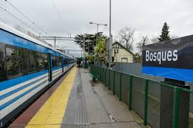

del recorrido vÃa Temperley hasta Gutiérrez
vigencia del cuadro horario del servicio
tiempo aproximado entre Bosques y Gutiérrez

Información del servicio
Recorrido urbano e interurbano orientado a trabajadores, estudiantes y vecinos que viajan entre Constitución, Temperley, Bosques y Gutiérrez.
Ver recorrido
Horarios reales
Tablas con salidas del cuadro horario Bosques - Gutiérrez, más frecuencia general del servicio a Constitución.
Ver horarios
Accesibilidad
Criterios de lectura, contraste, navegación clara y asistencia para mejorar la experiencia de todos los pasajeros.
Ver accesibilidad